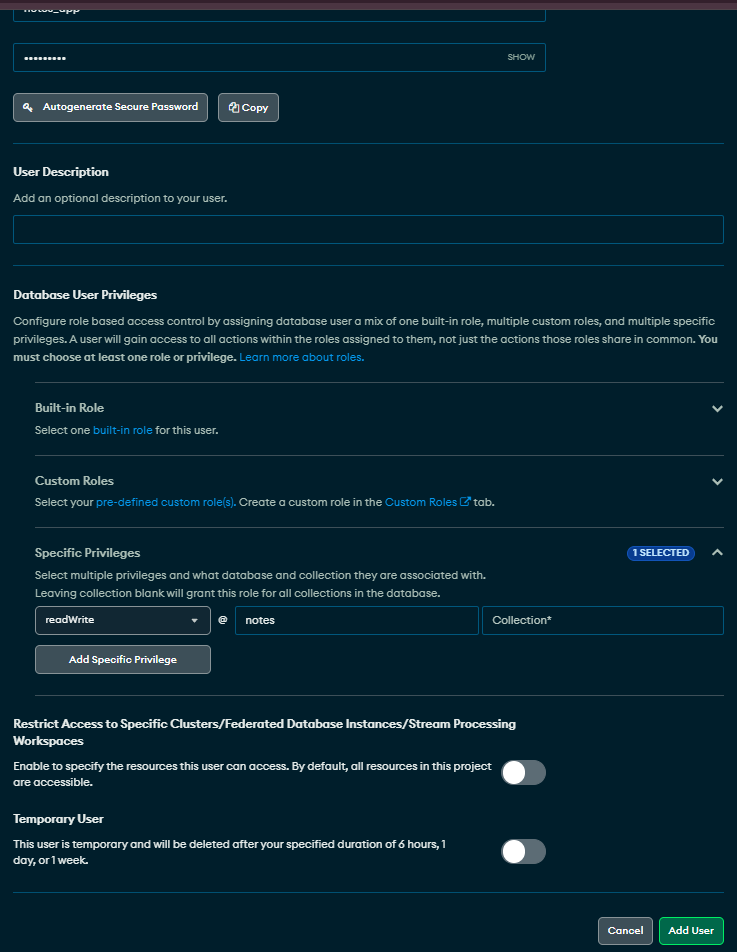
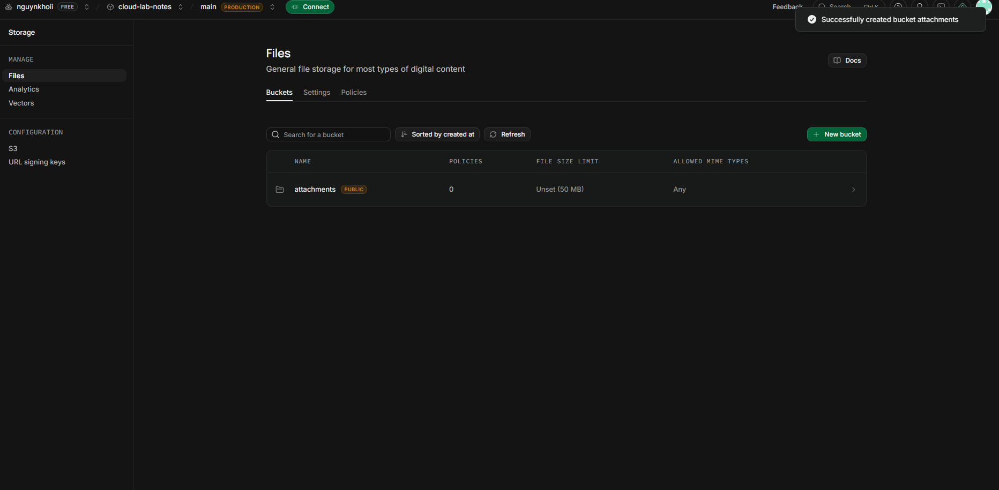
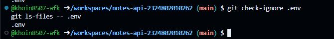
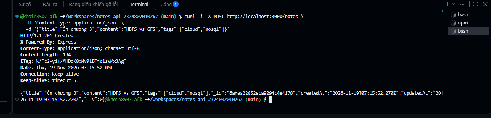
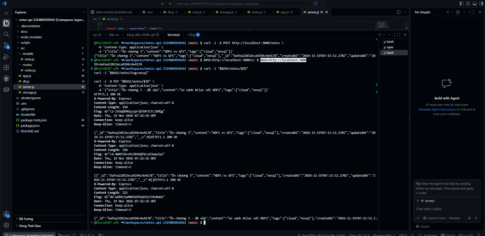
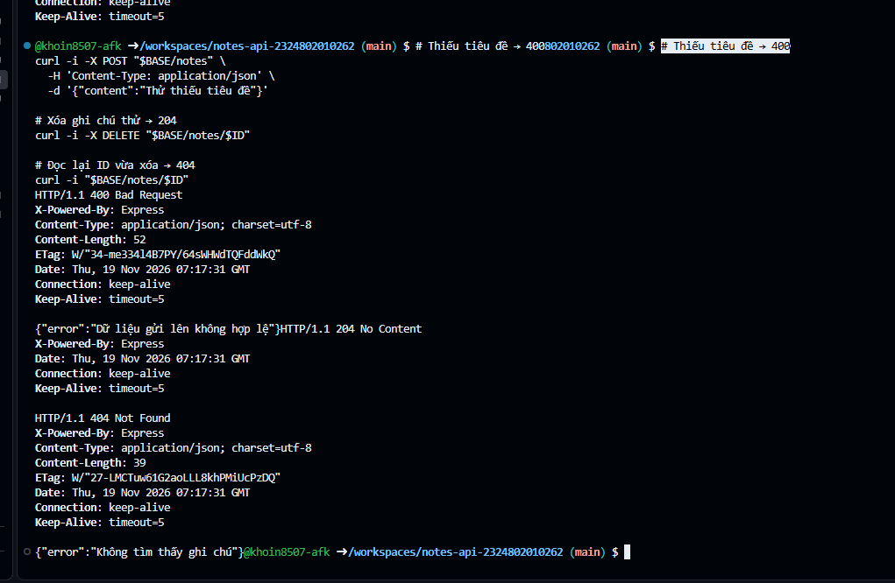
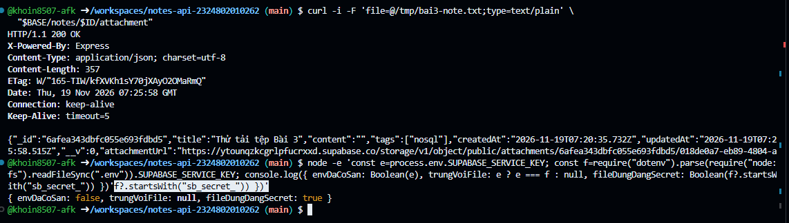
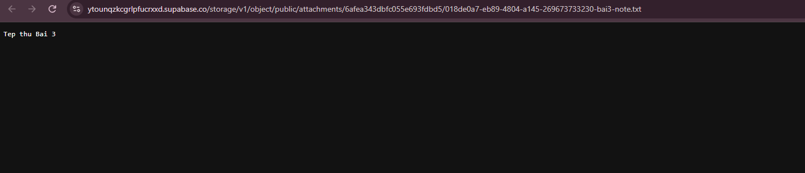
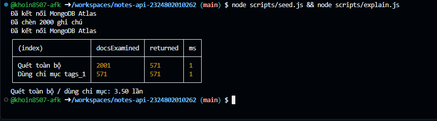
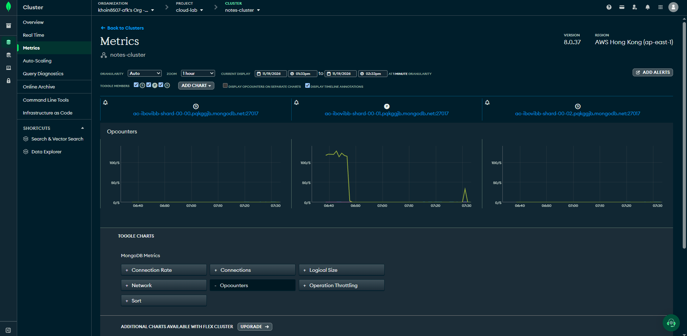

Bài 3. Lưu trữ phân tán với NoSQL và lưu trữ đối tượng
Sinh viên Nguyễn Nguyên Khôi
MSSV 2324802010262 · Lớp D23CNTT03
Ngày thực hiện 19/11/2026
1. Mục tiêu
Mở rộng API Hello Cloud để quản lý ghi chú trên MongoDB Atlas, lưu tệp đính kèm trên Supabase Storage và đo mức giảm số tài liệu phải kiểm tra khi dùng chỉ mục. Bài thực hành cũng đối chiếu cơ chế nhân bản của Atlas với HDFS.
2. Cấu hình và triển khai
- MongoDB Atlas. Project
cloud-lab, cụm Freenotes-clustertại AWS Hong Kong (ap-east-1), databasenotes. Tài khoảnnotes_appcó quyềnreadWritetrên database này. Danh sách IP dùng0.0.0.0/0cho bài thực hành từ Codespaces. - Supabase Storage. Project
cloud-lab-notescó bucket công khaiattachments. Node.js dùng khóa máy chủ để tải tệp và lưuattachmentUrltrong tài liệu ghi chú. Tệp thử được giới hạn 2 MiB ở API. - Mã nguồn.
src/db.jskết nối Atlas,src/models/note.jsđịnh nghĩa model và chỉ mục,src/storage.jskhởi tạo Storage khi cần,src/routes/notes.jsxử lý CRUD và upload.src/server.jskết nối Atlas trước khi lắng nghe ở cổng 3000. - Biến môi trường.
MONGODB_URI,SUPABASE_URLvàSUPABASE_SERVICE_KEYđược đặt trong.env.git check-ignore .envtrả về tên tệp vàgit ls-files -- .envkhông trả về dòng nào.
Minh chứng cấu hình dịch vụ và Git



3. Kiểm thử API và tệp đính kèm
| Thao tác | Yêu cầu | Kết quả quan sát |
|---|---|---|
| Tạo | POST /notes | 201 · Trả ghi chú mới có _id |
| Đọc danh sách | GET /notes?tag=nosql | 200 · Trả ghi chú có tag nosql |
| Đọc theo ID | GET /notes/:id | 200 · Trả đúng ghi chú |
| Cập nhật | PUT /notes/:id | 200 · Trả tiêu đề và nội dung đã sửa |
| Xóa | DELETE /notes/:id | 204 · Phản hồi không có nội dung |
| Dữ liệu thiếu | POST /notes thiếu title | 400 · Dữ liệu gửi lên không hợp lệ |
| ID đã xóa | GET /notes/:id sau khi xóa | 404 · Không tìm thấy ghi chú |
| Đính kèm | POST /notes/:id/attachment, trường file | 200 · Mở attachmentUrl và đọc được nội dung “Tep thu Bai 3” |
Lần tải tệp đầu tiên gặp lỗi quyền RLS. Sau khi cấu hình lại khóa máy chủ của Supabase và khởi động lại API, thao tác tải tệp trả 200.
Minh chứng CRUD



Minh chứng upload và mở tệp


4. Đo hiệu quả của chỉ mục
node scripts/seed.js chèn 2.000 ghi chú mẫu. Collection có 2.001 tài liệu trong lần đo, gồm 2.000 ghi chú mẫu và một ghi chú thử upload. node scripts/explain.js chạy cùng bộ lọc { tags: 'docker' } với explain('executionStats'). Một truy vấn dùng $natural để ép quét toàn bộ, truy vấn còn lại dùng hint('tags_1').
| Cách truy vấn | docsExamined | nReturned | Thời gian |
|---|---|---|---|
| Quét toàn bộ | 2.001 | 571 | 1 ms |
| Dùng chỉ mục tags_1 | 571 | 571 | 1 ms |
Quét toàn bộ kiểm tra số tài liệu gấp 2.001 ÷ 571 ≈ 3,50 lần so với dùng chỉ mục. Chỉ mục giảm khoảng 71,5% số tài liệu phải kiểm tra. Hai truy vấn có cùng thời gian đo 1 ms.

5. So sánh nhân bản Atlas và HDFS
Atlas có một Primary và hai Secondary tại thời điểm chụp. Các Secondary duy trì bản sao dữ liệu bằng cách áp dụng thay đổi từ oplog. Trong HDFS, tệp được chia thành các khối. DataNode lưu bản sao của từng khối, còn NameNode quản lý metadata và vị trí các khối.

6. Trả lời câu hỏi phản biện
Điều gì xảy ra với 2 triệu tài liệu? Nếu tỷ lệ tài liệu có tag
dockergiữ gần 28,5%, quét toàn bộ sẽ kiểm tra khoảng 2 triệu tài liệu, còn truy vấn dùng chỉ mục kiểm tra khoảng 571.000 tài liệu. Đây là ước tính khối lượng quét, dựa trên phân bố tag của bộ mẫu. Giới hạn 100 thao tác/giây của Atlas Free áp dụng cho thao tác cơ sở dữ liệu. Độ trễ còn phụ thuộc kích thước tài liệu, bộ nhớ đệm và tải đồng thời nên cần đo riêng.Vì sao lưu tệp ngoài MongoDB? Lưu nội dung tệp trong Storage giúp giữ tài liệu ghi chú nhỏ và cho phép tải tệp trực tiếp qua URL. MongoDB chỉ cần giữ
attachmentUrlcùng dữ liệu ghi chú. Khi thay hoặc xóa ghi chú, ứng dụng cần quản lý vòng đời đối tượng Storage để tránh tệp không còn được tham chiếu.Con số ba có ý nghĩa gì? Ba bản sao giúp dữ liệu vẫn có thể phục vụ khi một nút gặp sự cố. Trong replica set có ba thành viên bỏ phiếu, hai phiếu tạo thành đa số để bầu Primary. Trong HDFS, hệ số nhân bản ba áp dụng cho từng khối tệp. Các bản sao nằm trên DataNode và NameNode theo dõi vị trí của chúng.
7. Kết luận
API thực hiện được CRUD trên Atlas và trả URL mở được cho tệp lưu trên Supabase. Với bộ lọc thử nghiệm, dùng chỉ mục kiểm tra 571 tài liệu so với 2.001 tài liệu khi quét toàn bộ. Sơ đồ đối chiếu cho thấy Atlas nhân bản dữ liệu của replica set, còn HDFS nhân bản theo khối tệp.